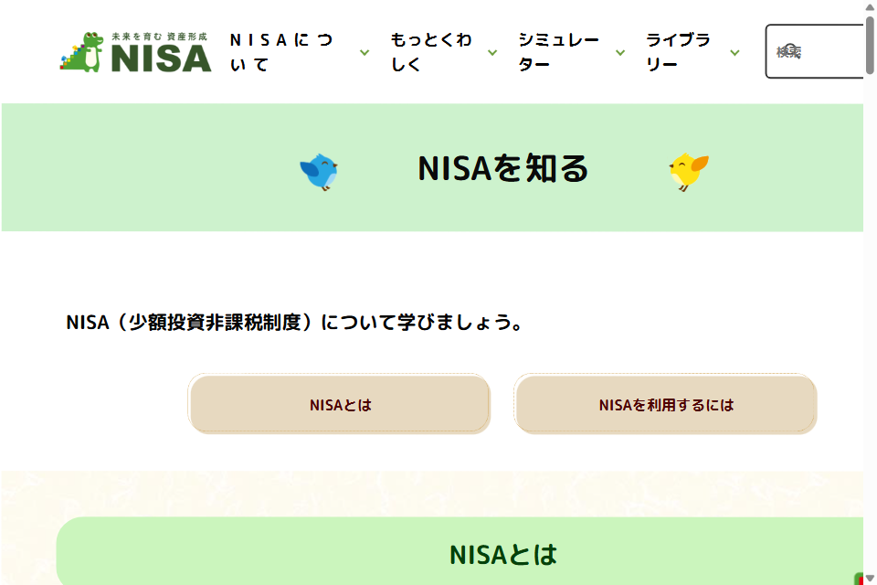
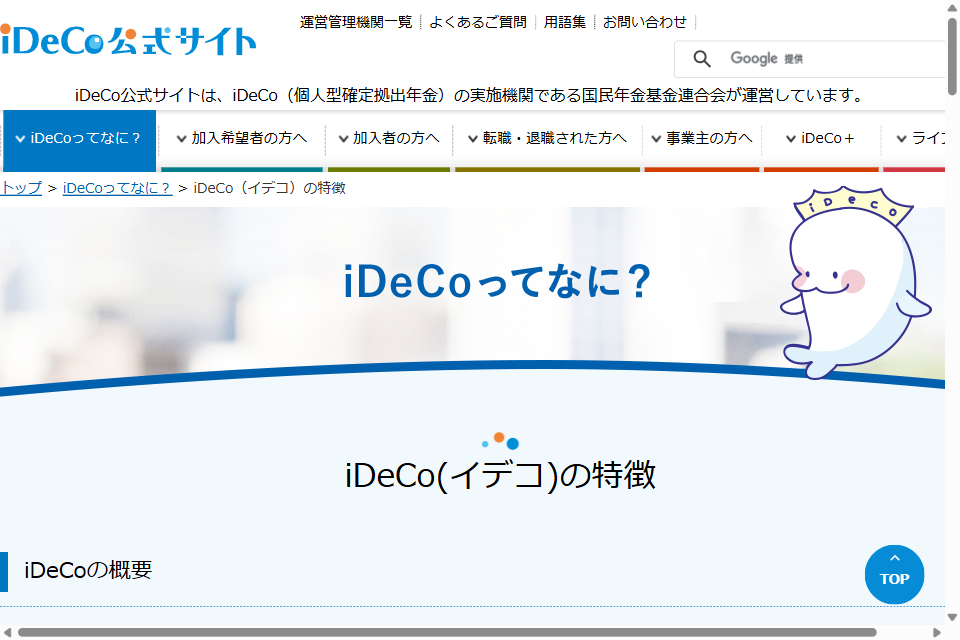

ここまで紹介してきた副業は、いずれも「自分が動いて稼ぐ」ものでした。一方で資産運用は、自分の代わりにお金に働いてもらい、長期的に資産を育てていく方法です。この記事では、日本の代表的な非課税制度であるNISA・iDeCoの仕組みを、金融庁・iDeCo公式サイトの情報にもとづいて解説します。
資産運用の基本的な考え方
投資の世界では、「長期・積立・分散」が基本原則としてよく紹介されます。
- 長期：短期間の値動きに一喜一憂せず、長い時間をかけて資産を育てる考え方
- 積立：毎月一定額をコツコツ買い続けることで、購入タイミングを分散させる方法
- 分散：値動きの異なる複数の資産・地域に分けて投資し、一つの値下がりの影響を抑える考え方
また、運用で得た利益をそのまま再投資することで利益が利益を生む「複利」の効果も、長期運用ではよく紹介される考え方です。ただし、実際のリターンは商品や市場環境によって変動し、必ずしも増えるとは限りません。
NISA（少額投資非課税制度）とは

NISAは、株式や投資信託などから得た利益（売却益・配当金）が非課税になる制度です。通常、投資の利益には約20％の税金がかかりますが、NISA口座内で得た利益には税金がかかりません（金融庁NISA特設ウェブサイトより）。2024年1月から始まった新制度のポイントは次の通りです。
- 非課税保有期間は無期限：期間を気にせず長期保有できる
- 年間投資枠は最大360万円（つみたて投資枠120万円＋成長投資枠240万円）
- 非課税保有限度額は最大1,800万円（うち成長投資枠は1,200万円まで）
- 対象年齢は18歳以上（利用する年の1月1日時点）、1人1口座
- つみたて投資枠は金融庁が定めた基準を満たす投資信託等が対象、成長投資枠は個別株・ETFなども選択可能
いつでも自由に引き出せる流動性の高さが特徴で、教育資金や住宅資金など、将来使う予定のあるお金の準備にも活用しやすい制度です。
iDeCo（個人型確定拠出年金）とは

iDeCoは、自分で掛金を拠出し、自分で運用方法を選んで老後資金を準備する私的年金制度です（iDeCo公式サイト／国民年金基金連合会より）。NISAとは異なり、老後の資産形成を目的とした制度のため、次のような特徴があります。
- 掛金・運用益・受取時に税制優遇がある：掛金は原則として全額が所得控除の対象になる
- 原則60歳になるまで引き出せない：老後資金専用のため、途中で自由に引き出すことはできない
- 加入可能年齢は原則20歳以上65歳未満（一定の条件あり）
- 元本確保型の商品もあるが、投資信託などの商品は元本を下回る可能性がある
- 金融機関によって手数料がかかる
NISAとiDeCo、何が違う？
| NISA | iDeCo | |
|---|---|---|
| 目的 | 自由な資産形成 | 老後資金の準備 |
| 引き出し | いつでも可能 | 原則60歳まで不可 |
| 主な税制優遇 | 運用益が非課税 | 掛金の所得控除＋運用益非課税＋受取時控除 |
| 対象年齢 | 18歳以上 | 原則20歳以上65歳未満 |
数値は2026年9月時点の金融庁・iDeCo公式サイトの掲載情報にもとづきます。制度は改正されることがあるため、最新情報は各公式サイトでご確認ください。
始める前に知っておきたい注意点
- 元本割れのリスクがある：投資信託や株式は値動きのある商品のため、拠出した金額を下回る可能性があります
- 生活費とは別の余裕資金で行う：当面使う予定のないお金の範囲で運用し、生活防衛資金は現金で確保しておきましょう
- SNS経由の「必ず儲かる」という投資話は詐欺の可能性がある：消費者庁は、著名人になりすましたSNSでの投資勧誘や、個人名義の口座への振込を求める手口に注意を呼びかけています。個人名義の口座への投資資金の振込を求められた場合は詐欺を疑いましょう
- 不安な場合は消費者ホットライン「188」に相談する：勧誘に不信感を持った場合は、契約前に相談する習慣をつけましょう
NISA・iDeCoで得た利益は制度の範囲内では非課税ですが、それ以外の投資（特定口座・一般口座での売買など）で得た利益には課税されます。副業と投資の両方で収入がある場合の確定申告については、副業の確定申告・税金の基礎知識もあわせてご確認ください。